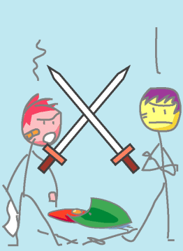

→
Damian Cugley →
Alleged Tarot 2002 →
png →
→
Damian Cugley →
Alleged Tarot 2002 →
png →
| « The Ace of Swords | The Three of Swords » | |
|  | ||
|
The Two of Wands The Two of Cups The Two of Coins |
||
Upright: balance, peace restored, truce
Reversed: conflict, difference of opinion
Swords represent military matters: strife, judicial matters, strategy and abstract thought. Twos represent combination of or balance between two forces. So the Two of Swords often represents opposing forces that have met in a (temporary) stalemate, truce, or impass. These can be internal states, like the knowledge that something must be done, versus reluctance to actually do it. It can also mean two forces or people in conflict that could work together given the right insight.
See also Thirteen’s description on the Aeclectic Tarot site
If your browser supports SVG, then you should visit the SVG version of this page. It is so much more cool!